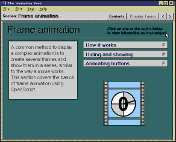

Australian Toolbook User Group



There are many methods of animation. Launch the book ANIMATE.TBK (supplied with
Toolbook) and view the examples supplied.
Path Animation is a good technique - built into Toolbook & almost scriptless. Select an object and select Tools/Path animation from the menu. After defining the animation, paste some script into some object to PLAY the animation. Use the autoscript feature to avoid scripting this yourself.
 A new technique that can be used with the latest
Toolbook II version 6 is that of using an Active–X control to display an animated
GIF.
A new technique that can be used with the latest
Toolbook II version 6 is that of using an Active–X control to display an animated
GIF.
----
A note from: Sameer Verma, Georgia State University
One of the ways to deal with file sizes is to convert the avi file to a realmedia
video using the realencoder [free], and run it through the realplayer [free]. Both are
obtainable from
http://www.real.com
Advantage: Streaming media, so file size doesn't matter. Can be put on a CD ROM or your web server. Your ISP may have to support it though for true streaming. AFAIK, Realmedia files use fractal based compression, thus making screen captures much smaller. Fractals are able to store information about non-changing screen areas very nicely.
To access thousands more tips offline - download Toolbook Knowledge Nuggets